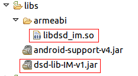
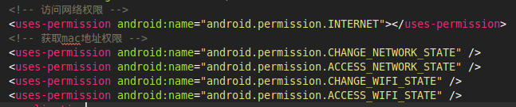

集成前准备
到大数点开发者平台注册成为大数点合作伙伴并创建应用，每创建一个应用大数点平台会为其生成一个AppID和AppKey，AppID在大数点平台唯一标识一个应用，而AppKey可以被更新。AppID和AppKey将在您的代码里使用，保证您的应用与大数点平台间的安全传输。
若您还没有注册，请使用如下Demo App作测试：
Demo App:
AppID: 3_95F8TwKfyN7Lj35j8q_A
AppKey: ec55784a5db3268a下载SDK
到大数点官网下载IM SDK.
SDK内容
- dsd-lib-IM.jar
- libdsd_im.so
配置工程
导入库和jar包
拷贝libdsd_im.so到libs/armeabi目录下，如果没有armeabi目录，请手动创建该目录。
拷贝dsd-lib-IM-v1到libs目录下，如下图所示。

配置权限
如下图所示,在AndroidManifest.xml中加入如下内容使能必要的访问权限.
<!-- 访问网络权限 -->
<uses-permission android:name="android.permission.INTERNET"></uses-permission>
<!-- 获取mac地址权限 -->
<uses-permission android:name="android.permission.CHANGE_NETWORK_STATE" />
<uses-permission android:name="android.permission.ACCESS_NETWORK_STATE" />
<uses-permission android:name="android.permission.CHANGE_WIFI_STATE" />
<uses-permission android:name="android.permission.ACCESS_WIFI_STATE" />
初始化SDK
实现如下接口
public class MainActivity extends Activity implements DsdClientInterface@Override
public void docallback(int event, String content, int len)-
注意：不要在该函数中刷新UI。
-
接口函数实现,该接口函数是SDK的核心函数,该函数会在下面几种情况被调用.
1.用户发送的异步消息成功
2.收到服务器发来的单播,组播,广播消息
3.连接服务器成功
4.该用户被提出某个组播组
5.与服务器连接断开
-
参数说明
event content len 1:异步发送消息成功 发送该消息时的消息id 消息id长度 2:收到单播消息 {"msg":"消息内容","from":"发送消息者","time":"发送消息的时间"} JSON长度 3:收到组播消息 {"msg":"消息内容","from":"发送消息者","time":"发送消息的时间","groupid":"组id"} JSON长度 4:收到广播消息 {"msg":"消息内容","from":"发送消息者","time":"发送消息的时间"} JSON长度 5:连接服务器成功 NULL 0 6:用户被踢出组播组 NULL 0 7:与服务器链接断开 NULL 0 8:用户在其它客户端登陆 NULL 0
链接服务器
// 获取sdk实例
private DsdImClientJNI dsdClientTest = DsdImClientJNI.getInstance();// 注册回调函数到SDK中,将callback函数注册到SDK中,SDK会在事件发生的时候回调该函数.
// 其中this为实现了docallback()回调函数的类
dsdClientTest.setCallfuc(this);/**
* 初始化sdk并链接服务器。
* @param serverAddress 服务器地址，为空则默认使用大数点提供的公有云服务
* @param version "1.0"
* @param appID app的id，在大数点开发者平台创建应用时获得
* @param appKey app秘钥，在大数点开发者平台创建应用时获得
* @param userID 用户名,用户身份唯一标识
* @param opt 可选的用户信息，用于后台统计；
* 传null表示不统计，或者传一个用户信息的JSON，比如{"name":"jack","gender":"male","region":"Beijing"}
* @param clientID 客户端id（手机mac地址），用于服务器向客户端推送消息
* @param obj DsdImClientJNI的实例对象
* @return 成功:0,失败:-1
*/
int dsdInit(String serverAddress, String version, String appID, String appKey, String userID, String opt, String clientID, DsdImClientJNI obj);发送单播消息
注意： 1.使用大数点公有云服务器，非VIP用户可以发送的最大消息长度为1024个字节。 2.所有发送消息相关的函数，消息都必须以如下JSON格式发送。
{"t":"0|1|2|3|4","b":"msg content"}
@t： Message Type
0 text
1 image
2 audio
3 video
4 HTML5 page
@b： 消息内容,如果消息为image或audio等多媒体消息，则为该多媒体的URL。同步发送
/**
* 同步单播消息.该函数会阻塞到收到服务器的ack或者超时后返回.
* @param from 发送消息的人
* @param toUserlist 目标用户列表
* @param users 目标用户个数
* @param msg 消息内容,必须为JSON格式
* @return 成功:0,失败:-1
*/
int dsdSyncSendWithAck(String from, String[] toUserList, int users, String msg);异步发送
/**
* 异步发送单播消息,该函数不会阻塞调用者.
* @param from 发送者
* @param toUserlist 目标用户列表
* @param users 目标用户个数
* @param msg 消息内容,必须为JSON格式
* @param msgid 用户指定的msgid,如果发送成功,该msgid会在接口函数中上报.
*/
void dsdAsyncSendWithAck(String from, String[] toUserList, int users, String msg, String msgid);发送组播消息
同步发送
/**
* 同步的发送组播消息,该函数会阻塞到收到服务器的ack或者超时后返回.
* @param user 发送者
* @param groupid 组id
* @param msg 消息内容
* @return 成功:0,失败:-1
*/
int dsdSyncMulticastwithAck(String user, String groupid, String msg);异步发送
/**
* 异步的发送组播消息,该函数不会阻塞调用者.
* @param user 发送者
* @param groupid 组id
* @param msg 消息内容
* @param msgid 用户指定的msgid,如果发送成功,该msgid会在回调函数中上报.
*/
void dsdAsyncMulticastwithAck(String user, String groupid, String msg, String msgid);发送广播消息
同步广播
/**
* 同步的发送广播消息,该函数会阻塞到收到服务器的ack或者超时后返回.
* @param user 发送者
* @param msg 消息内容
* @return 成功:0,失败:-1
*/
int dsdSyncBroadcastWithAck(String user, String msg);异步广播
/**
* 异步的发送广播消息,该函数不会阻塞调用者.
* @param user 发送者
* @param msg 消息内容
* @param msgid 用户指定的msgid,如果发送成功,该msgid会在回调函数中上报.
*/
void dsdAsyncBroadcastWithAck(String user, String msg, String msgid);创建组
/**
* 创建组播组,该函数会阻塞到收到服务器的ack或者超时后返回.
* @param user 用户名
* @param groupName 组名
* @return 成功:返回组播组的id,失败:NULL
*/
String dsdCreateGroup(String user, String groupName);加入组
/**
* 加入组播组,该函数会阻塞到收到服务器的ack或者超时后返回.
* @param user 用户名
* @param groupid dsdCreateGroup函数返回的组播组id
* @return 成功:0,失败-1
*/
int dsdJoinGroup(String user, String groupid);离开组
/**
* 离开组播组,该函数会阻塞到收到服务器的ack或者超时后返回.
* @param user 离开的用户
* @param groupid dsdCreateGroup函数返回的组播组id
* @return 成功:0,失败:-1
*/
int dsdLeaveGroup(String user, String groupid);将某人踢出组
/**
* 将某人踢出组播组,该函数会阻塞到收到服务器的ack或者超时后返回.
* @param user 组播组拥有者
* @param groupid dsdCreateGroup函数返回的组播组id
* @param groupmember 要踢出的人
* @return 成功:0,失败-1
*/
int dsdKickOutGroup(String user, String groupid, String groupMember);与服务器断开链接
/**
* 退出登陆，调用该函数后将不会收到服务器的推送消息。
*/
void dsdDisConnect();下载Android示例程序